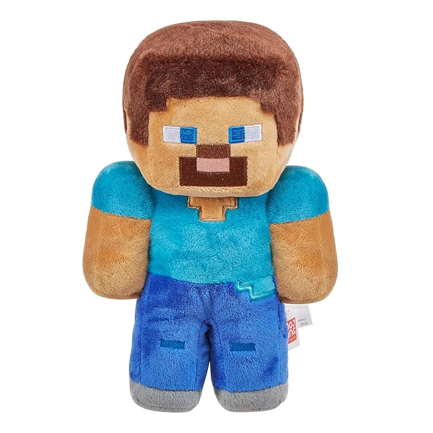
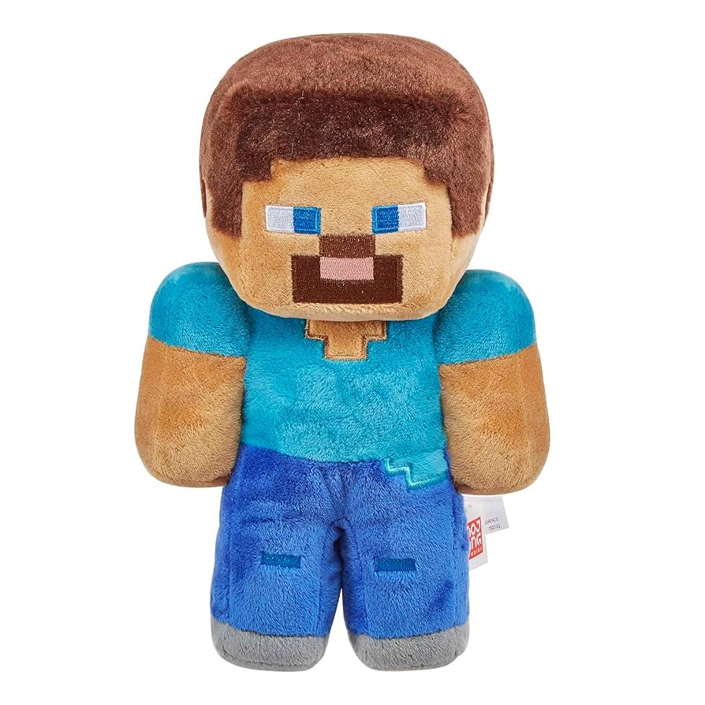

Mi nombre es Sergio Alfredo Gutiérrez Mendiola y soy estudiante de la carrera de Ingeniería en Robótica y Sistemas Digitales. Mis pasatiempos son jugar videojuegos, juegos de mesa, probar a cocinar nuevas recetas, y leer.
 

A pesar de que nací en Villahermosa, Tabasco, crecí en la ciudad de Tuxtla Gutiérrez, Chiapas. Desde pequeño siempre me ha gustado la tecnología y asistí a varios cursos de robótica, lo que considero fue fundamental para que decidiera estudiar esta carrera, ya que me gusta mucho la idea de crear cosas nuevas y aprender como funcionan aquellas que ya existen.
Me encantaría poder dedicarme a la investigación y desarrollo de nuevas tecnologías, principalmente orientadas al área del transporte y energías renovables, ya que considero que es un área con mucho potencial de mejora, y que podría tener un gran impacto positivo a futuro para las presentes y nuevas generaciones que cohabitamos en el planeta.
Confía en mí y prueba esta experiencia, puede que te sirva de algo :DY aquí te dejo música que me agrada, por si quieres escuchar algo mientras navegas por la web o simplemente quieres conocer música nueva.